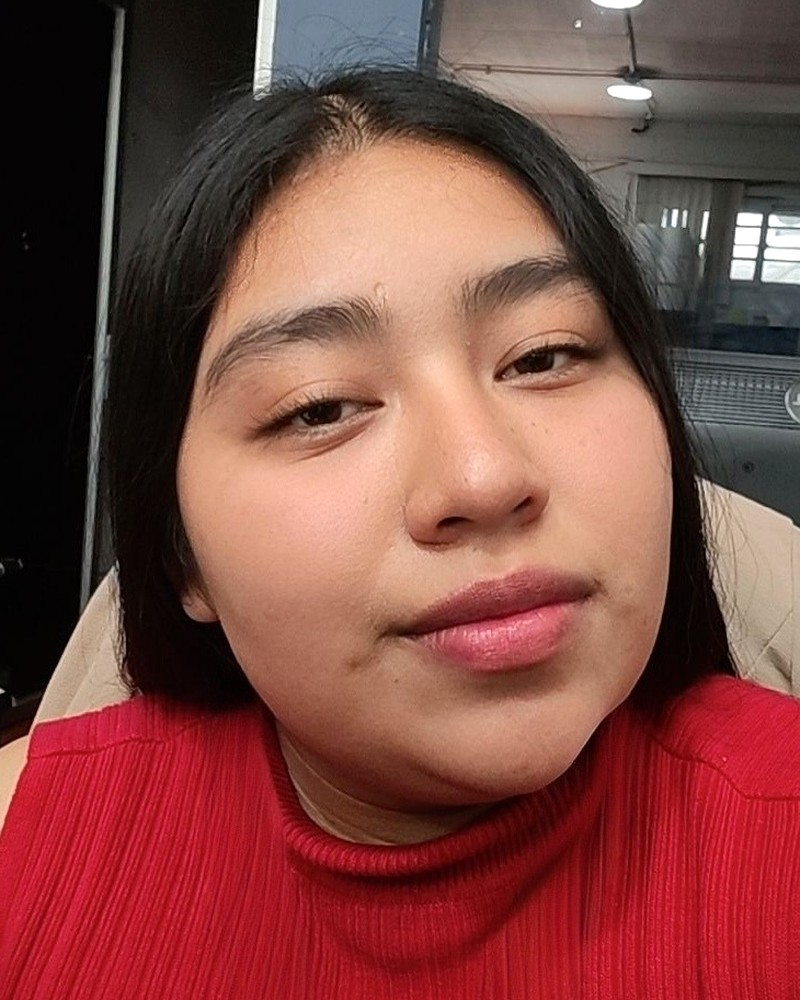

Darlin Amelia Cucul González
Psicóloga Clínica en formación · Perito Contador
¡Hola! Tengo 22 años y soy estudiante de la Licenciatura en Psicología Clínica en la Universidad Mariano Gálvez de Guatemala y Perito Contador. Mi meta es acompañar el bienestar emocional de niños, familias y parejas, con empatía, escucha activa y un trato siempre confidencial y libre de juicios.
Combino la sensibilidad humana de la psicología con la organización y la atención al detalle que aprendí en mi formación y experiencia contable.
Descargar mi CV en PDF Ver mis consultas